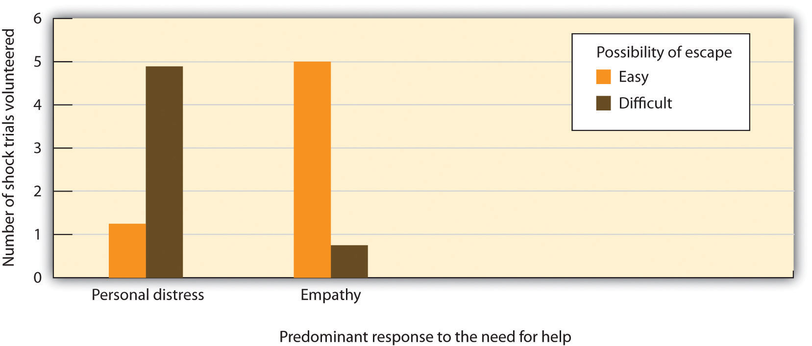

Because our ability to successfully interact with other people is so important to our survival, these skills have become part of human nature. We determine whether to help in large part on the basis of how other people make us feel, and how we think we will feel if we help or do not help them.
I do not need to tell you that people help more when they are in good mood. We ask our parents to use their car, and we ask our boss for a raise, when we think they are in a positive mood rather than a negative one. Positive moods have been shown to increase many types of helping behavior, including contributing to charity, donating blood, and helping coworkers (Isen, 1999).Isen, A. M. (Ed.). (1999). Positive affect. New York, NY: John Wiley & Sons. It is also relatively easy to put people in a good mood. You might not be surprised to hear that people are more likely to help after they’ve done well on a test or just received a big bonus in their paycheck. But research has found that even more trivial things, such as finding a coin in a phone booth, listening to a comedy recording, having someone smile at you, or even smelling the pleasant scent of perfume is enough to put people in a good mood and to cause them to be helpful (Baron & Thomley, 1994; Gueguen & De Gail, 2003; Isen & Levin, 1972).Baron, R. A., & Thomley, J. (1994). A whiff of reality: Positive affect as a potential mediator of the effects of pleasant fragrances on task performance and helping. Environment and Behavior, 26(6), 766–784; Gueguen, N., & De Gail, M.-A. (2003). The effect of smiling on helping behavior: Smiling and Good Samaritan behavior. Communication Reports, 16(2), 133–140; Isen, A. M., & Levin, P. F. (1972). Effect of feeling good on helping: Cookies and kindness. Journal of Personality and Social Psychology, 21, 384–388.
In another study, van Baaren, Holland, Kawakami, and van Knippenberg (2004)van Baaren, R. B., Holland, R. W., Kawakami, K., & van Knippenberg, A. (2004). Mimicry and prosocial behavior. Psychological Science, 15(1), 71–74. had students interact with an experimenter who either mimicked them by subtly copying their behaviors out of their awareness or did not mimic them. The researchers found that people who had been mimicked were more likely to help, by picking up pens that had fallen on the floor and by donating to a charity. It seems quite possible that this effect is due to the influence of positive moods on helping—we like people we see as similar to us and that puts us in a good mood, making us more likely to help. In sum, the influence of mood on helping is substantial (Carlson, Charlin, & Miller, 1988),Carlson, M., Charlin, V., & Miller, N. (1988). Positive mood and helping behavior: A test of six hypotheses. Journal of Personality and Social Psychology, 55(2), 211–229. so if you’re looking for help, ask on a nice day, subtly mimic the person’s behaviors, or prepare some good jokes.
But why does being in a good mood make us helpful? There are probably several reasons. For one, positive mood indicates that the environment is not dangerous and therefore that we can safely help others. Second, we like other people more when we are in good moods, and that may lead us to help them. Finally, and perhaps most important, is the possibility the helping makes us feel good about ourselves, thereby maintaining our positive mood. In fact, people who are in good moods are particularly likely to help when the help that they are going to give seems likely to maintain their positive mood. But if they think that the helping is going spoil their good mood, even people in good moods are likely to refuse to help (Erber & Markunas, 2006).Erber, R., & Markunas, S. (Eds.). (2006). Managing affective states. New York, NY: Psychology Press.
Although positive moods can increase helping, negative emotions can do so too. The idea is that if helping can reduce negative feelings we are experiencing, then we may help in order to get rid of those bad feelings (Cialdini, Darby, & Vincent, 1973).Cialdini, R. B., Darby, B. L., & Vincent, J. E. (1973). Transgression and altruism: A case for hedonism. Journal of Experimental Social Psychology, 9(6), 502–516. One emotion that is particularly important in this regard is guilt. We feel guilt when we think that we (or others we feel close to) may have caused harm to another person (Tangney, 2003).Tangney, J. P. (Ed.). (2003). Self-relevant emotions. New York, NY: Guilford Press. The experience of guilt increases our desire to create positive relationships with other people. Because we hate to feel guilty, we will go out of our way to reduce any feelings of guilt that we may be experiencing. And one way to relieve our guilt is by helping. Put simply, feelings of guilt lead us to try to make up for our transgressions in any way possible, including by helping others.
In research by Dennis Regan and his colleagues (Regan, Williams, & Sparling, 1972),Regan, D. T., Williams, M., & Sparling, S. (1972). Voluntary expiation of guilt: A field experiment. Journal of Personality and Social Psychology, 24(1), 42–45. students were led to believe that they had broken another person’s camera, which in turn made them feel guilty. Then another person presented a need for help. The students who were feeling guilty were more likely to help the second person than were those who were not feeling guilty. Thus participants who unintentionally harmed one person ended up being more helpful to another person who had nothing to do with the original source of the guilt. This situation illustrates the function of guilt: We feel guilty when we think we have harmed our relationships with others, and the guilt reminds us that we need to work to repair these transgressions (Baumeister, Stillwell, & Heatherton, 1994).Baumeister, R. F., Stillwell, A. M., & Heatherton, T. F. (1994). Guilt: An interpersonal approach. Psychological Bulletin, 115(2), 243–267.
Advertisers may try to invoke guilt to get people to contribute to charitable causes. This approach is particularly effective when people feel that they are able to engage in the necessary helping (Basil, Ridgway, & Basil, 2008).Basil, D. Z., Ridgway, N. M., & Basil, M. D. (2008). Guilt and giving: A process model of empathy and efficacy. Psychology and Marketing, 25(1), 1–23.
But what about other emotions, such as sadness, anger, and fear? It turns out that we also may be more likely to help when we are fearful or sad—again to make ourselves feel better. Jonas, Schimel, Greenberg, and Pyszczynski (2002)Jonas, E., Schimel, J., Greenberg, J., & Pyszczynski, T. (2002). The Scrooge effect: Evidence that mortality salience increases prosocial attitudes and behavior. Personality and Social Psychology Bulletin, 28(10), 1342–1353. found that people who were induced to think about their own death—for instance, when they were interviewed in front of a funeral home—became more altruistic.
Imagine that you arrive upon the scene of a car accident that has just occurred. The driver of the car has been thrown out on the highway and is seriously injured. He is bleeding, has many broken bones, and may be near death. Other cars are just driving by the scene, but you could easily pull over to help. Would you be likely to just drive by, or would you stop to help?
The negative emotions that we may experience when we are perceiving another person’s distress have a big influence on our helping. In some cases people feel rather sickened or disgusted by the victim of an emergency—for instance, when the person is seriously injured and bleeding. Personal distressThe negative emotions that we may experience when we view another person’s suffering. refers to the negative emotions that we may experience when we view another person’s suffering. Because we feel so uncomfortable, when we feel personal distress we may simply leave the scene rather than stopping.
In other cases we may not feel so many negative emotions upon viewing another person in need but rather more positive feelings of a close connection with the person who is suffering. When we really experience the pain and the needs of the other person, we say that we are feeling empathy for the other. EmpathyAn affective response in which the person understands, and even feels, the other person’s distress, and when he or she experiences events the way the other person does. refers to an affective response in which a person understands, and even feels, another person’s distress and experiences events the way the other person does. Empathy seems to be a biological aspect of human nature—an emotion that is an integral part of being human—and that is designed to help us help. Empathy allows us to quickly and automatically perceive and understand the emotional states of others and to regulate our behavior toward others in coordinated and cooperative ways (de Waal, 2008).de Waal, F. B. M. (2008). Putting the altruism back into altruism: The evolution of empathy. Annual Review of Psychology, 59, 279–300. Empathy may also create other emotions, such as sympathy, compassion, and tenderness. You can well imagine that we are more likely to help someone when we are feeling empathy for them—in this case we want to comfort and help the victim of the car accident.
Personal Distress Versus Empathy as Determinants of Helping
We have seen that people may feel either positive or negative emotions when they see someone who needs help. They may help others in part for selfish reasons—for instance, to relieve their own negative feelings about the suffering of the other—and in part for truly altruistic reasons—because they are experiencing empathy for the distress of the other person. But which type of emotion leads us to help in which situations? Daniel Batson and his colleagues (Batson, O’Quin, Fultz, Varnderplas, & Isen, 1983, Study 2)Batson, C. D., O’Quin, K., Fultz, J., Varnderplas, M., & Isen, A. M. (1983). Influence of self-reported distress and empathy on egoistic versus altruistic motivation to help. Journal of Personality and Social Psychology, 45(3), 706–718. attempted answer this question by finding out if the ability to easily leave the scene of the suffering might matter.
In the study, male and female college students watched another person of the same sex who they thought was working on series of tasks in the next room (the person was actually on a prerecorded videotape, although the participants did not know that). The women were told the person was named Elaine, and the men were told the person was named Charlie. During the time the students were watching, and as part of the experiment, the other person also supposedly received some mild electric shocks.
The students who were observing were randomly assigned to one of two experimental conditions. The students who were in the easy-escape condition were told that although the other person would be completing 10 shock trials, they only needed to watch the first two, after which they could leave. The students in the difficult-escape condition, however, were told that they would need to watch all 10 of the shock trials.
During the second trial, the person in other room began to look as if he or she was experiencing some discomfort. As the participants looked on, the assistant administering the shocks to the person asked whether he or she was all right, and the person hesitantly said yes but also asked for a glass of water before going on.
During this break, the experimenter entered the observation room and gave the research participant a questionnaire. The questionnaire asked the participant to indicate the feelings he or she was experiencing at the moment, and the responses to these questions allowed the experimenters to determine whether the person was feeling more personal distress (if they indicated that they were primarily feeling alarmed, grieved, upset, worried, disturbed, distressed, troubled, or perturbed) or more empathy (if they indicated that they were primarily feeling sympathetic, moved, compassionate, warm, softhearted, or tender).
Then, the experimenter pointed out to the research participant that the other person was feeling uncomfortable and asked if he or she might be willing to change places with that person. The dependent measure in the research was the average number of trials that the participant agreed to take for Elaine or Charlie.
As you can see in the following figure, Batson and the team found a person-situation interaction effect, such that when the participants knew that they could leave relatively quickly (the easy-escape condition), then the people who were feeling empathy helped, whereas those who were feeling distress did not. This makes sense because empathy involves a real concern for other person—a concern that could not be reduced even by leaving the scene. On other hand, when the participants knew that they were going to have to view all the trials (the difficult-escape condition), the participants who felt distress were more likely to help than were those who were feeling empathy. Batson and his colleagues interpreted this to mean that these people helped to avoid having to feel the negative emotion of personal distress which they were certain to experience as they continued to watch the other person suffer the shocks.
Figure 9.4
This figure shows the mean number of shock trials participants in each condition agreed to take for Elaine or Charlie. Data are from Batson et al. (1983), Study 2.
In subsequent research, Batson and his colleagues have tested this same hypothesis in other ways, such as by having the experimenter or the person in need of help appeal to the participants either to remain objective and “not get caught up” in what the person in need is experiencing (low empathy) or to try to imagine what the person in need is feeling (high empathy). In many experiments, they have found that when empathy is high, most people help regardless of whether or not they can easily escape the situation. On other hand, people who feel primarily distress tend to help only if they cannot avoid the negative affect they are experiencing by leaving the scene of the person in need.
Although help that occurs as a result of experiencing empathy for the other seems to be truly altruistic, it is difficult even in this case to be to be sure. There is ample evidence that we do help to make those that we help feel better, but there is just as much evidence that we help in order to feel good about ourselves. Even when we are feeling empathy, we may help in part because we know that we will feel sad or guilty if we do not help (Schaller & Cialdini, 1988).Schaller, M., & Cialdini, R. B. (1988). The economics of empathic helping: Support for a mood management motive. Journal of Experimental Social Psychology, 24(2), 163–181. Thus the distinction between an egoistic, self-concerned motive and an altruistic, other-concerned motive is not always completely clear; we help for both reasons.
In the end, we cannot completely rule out the possibility that people help in large part for selfish reasons. But does it really matter? If we give money to the needy because we will feel badly about ourselves if we do not, or if we give money to the needy because we want them to feel good, we have nevertheless made the contribution in both cases.